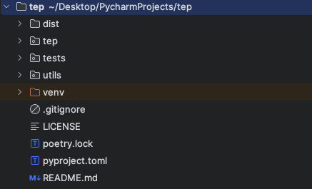
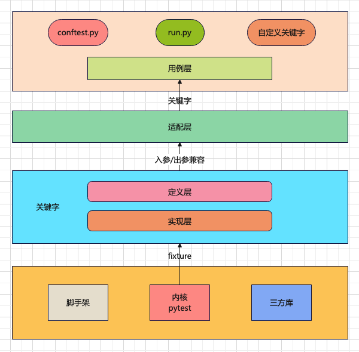
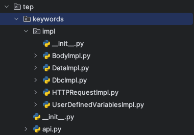
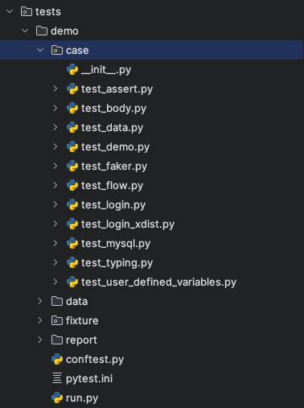
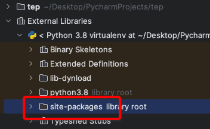
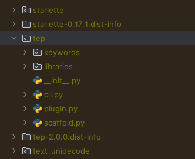

【开源框架】框架V2.0.0开发指南¶

温馨提示：开发指南，根据V2.0.0编写，不随版本更新维护，仅供入门参考。最新实现请结合教程和源码阅读，教程会在版本发布后维护。
环境准备¶
安装Python，3.8以上版本
安装poetry包管理工具，
pip install poetry克隆代码，
git clone ``https://github.com/dongfanger/tep
准备就绪，撸起袖子干！
目录结构¶

dist
poetry build生成目标文件，用于发布pypitep 核心代码
tests 测试代码
utils 工具包
venv 虚拟环境
.gitignore 忽略上传git
LICENSE 证书
poetry.lock 版本锁定
pyproject.toml 配置信息
README.md 说明文件
poetry命令¶
初始化：poetry init
添加包：poetry add pytest
移除包：poetry remove pytest
安装包：poetry install --only main
构建包：poetry build
发布包：poetry publish
poetry管理包信息可以在pyproject.toml文件中查看：
[tool.poetry.dependencies]
python = "^3.8"
faker = "^4.1.1"
urllib3 = "^2.0.7"
requests = "^2.22.0"
pyyaml = "^5.4.1"
pytest-assume = "^2.4.2"
loguru = "^0.4.1"
fastapi = "^0.72.0"
uvicorn = "^0.17.0"
pydantic = "^1.9.0"
pytest = "^7.1.1"
pytest-xdist = "^3.1.0"
filelock = "^3.8.2"
jsonpath = "^0.82"
pymysql = "^1.1.0"
pytest-html = "^4.0.2"
allure-pytest = "^2.13.2"
allure-python-commons = "^2.13.2"
指定国内镜像：
[[tool.poetry.source]]
name = "tsinghua"
priority = "default"
url = "https://pypi.tuna.tsinghua.edu.cn/simple"
注册命令行：
[tool.poetry.scripts]
tep = "tep.cli:main"
添加插件以调用pytest hook：
[tool.poetry.plugins."pytest11"]
"tep" = "tep.plugin:Plugin"
框架设计¶

框架内核是pytest，为框架提供了用例识别、组织运行、IDE集成等基础能力，以及pytest框架稳定性和强劲扩展能力。同时集成了requests等三方库，支持接口测试等。并实现了项目脚手架。
关键字驱动是通过pytest fixture特性来实现的，主要借助它实现：①测试前后置处理，②无需import就能使用，③PyCharm语法提示。这是fixture函数相比于普通函数的优势。关键字分为定义层和实现层，定义层是关键字契约，实现层负责具体逻辑实现。
适配层做了向下兼容，通过参数转换确保用例层使用的关键字，不会受迭代升级变化影响，使用者无感知，所有变化都有框架内部处理和兼容。
在项目内通过conftest.py跟框架进行连接，比如路径查找，插件加载等，同时定义run.py执行入口。也可以在项目中自定义关键字。
命令行实现¶
通过poetry注册在pyproject.toml
[tool.poetry.scripts]
tep = "tep.cli:main"
tep/cli.py的main函数与之对接。
#!/usr/bin/python
## encoding=utf-8
import argparse
import sys
from tep import __description__, __version__
from tep.scaffold import scaffold
def main():
parser = argparse.ArgumentParser(description=__description__)
parser.add_argument("-v", "--version", dest="version", action="store_true", help="show version")
parser.add_argument("-s", "--startproject", metavar='project_name', type=str, help="Create a new project with template structure")
parser.add_argument("-venv", dest="create_venv", action="store_true", help="Create virtual environment in the project, and install tep")
if len(sys.argv) == 1:
# tep
parser.print_help()
sys.exit(0)
elif len(sys.argv) == 2:
if sys.argv[1] in ["-v", "--version"]:
print(f"Current Version: V{__version__}")
print(r"""
____o__ __o____ o__ __o__/_ o__ __o
/ \ / \ <| v <| v\
\o/ < > / \ <\
| | \o/ o/
< > o__/_ |__ _<|/
| | |
o <o> <o>
<| | |
/ \ / \ _\o__/_ / \
""")
elif sys.argv[1] in ["-h", "--help"]:
parser.print_help()
elif sys.argv[1] in ["-s", "--startproject"]:
parser.print_help()
sys.exit(0)
args = parser.parse_args()
if sys.argv[1] in ["-s", "--startproject"]:
scaffold(args)
通过argparse库实现命名行参数。判断是-s时，调用scaffold(args)创建脚手架。
脚手架实现¶
tep/scaffold.py
创建文件夹和创建文件：
def create_folder(path):
os.makedirs(path)
msg = f"Created folder: {path}"
print(msg)
def create_file(path, file_content=""):
with open(path, "w", encoding="utf-8") as f:
f.write(file_content)
msg = f"Created file: {path}"
print(msg)
根据文件内容，通过字符串填充。
识别到-venv参数时创建虚拟环境：
if Config.CREATE_ENV:
# Create Python virtual Environment
os.chdir(project_name)
print("\nCreating virtual environment")
os.system("python -m venv .venv")
print("Created virtual environment: .venv")
# Install tep in the Python virtual Environment
print("Installing tep")
if platform.system().lower() == 'windows':
os.chdir(".venv")
os.chdir("Scripts")
os.system("pip install tep")
elif platform.system().lower() == 'linux':
os.chdir(".venv")
os.chdir("bin")
os.system("pip install tep")
关键字实现¶
tep/keywords目录下，定义在api.py，实现在impl里面：

api是关键字契约，以HTTPRequestKeyword为例：
@pytest.fixture(scope="session")
def HTTPRequestKeyword():
def _function(*args, **kwargs) -> Result:
method, url, kwargs = Args.parse(["method", "url"], args, kwargs)
return HTTPRequestImpl(method, url, **kwargs)
return _function
关键字是一个fixture函数，在函数内部定义了另外一个函数，然后把内部函数的函数名return了，当调用这个fixture函数时，使用使用的是fixture的return，也就是内部函数名，就相当于是在调内部函数了。这是pytest fixture的特性，不用管为什么，就这么用就对了。
api也是适配层，在内部函数中，对参数做了转换，用到了Args类：
class Args:
@classmethod
def parse(cls, fields: list, args: tuple, kwargs: dict) -> tuple:
# Parse fixed args
results = []
for i, field in enumerate(fields):
if i < len(args):
results.append(args[i])
else:
value = kwargs.get(field, None)
if value:
results.append(value)
# Args comes from kwargs, pop the key
kwargs.pop(field)
results.append(kwargs)
return tuple(results)
根据fields，从args和kwargs中解析出入参，然后传入关键字实现，比如这里解析了method和url两个入参，传入HTTPRequestImpl函数。
同时内部函数返回类型都是Result对象：
class Result:
# Http request, response
response: TepResponse = None
# Any data
data: Any = None
# Connect database, connection
conn = None
# Connect database, cursor
cursor = None
所有关键字的返回类型都封装在这里，基本类型就传入data，特殊类型就显式定义，比如接口请求响应就定义为response: TepResponse。确保后续如果关键字要新增返回值，也不会影响老代码。
关键字实现在impl包里面，有的关键字实现复杂，有的关键字实现简单。
复杂的：HTTPRequestImpl、BodyImpl
简单的：UserDefinedVariablesImpl、DataImpl、DbcImpl
def UserDefinedVariablesImpl(*args, **kwargs) -> Result:
file_path = os.path.join(Config().DATA_DIR, "UserDefinedVariables.yaml")
result = Result()
result.data = File(file_path).load()
return result
篇幅有限，关键字实现细节请阅读源码。所有关键字都在tests/demo/case编写了测试代码：

参数化实现¶
先看测试代码，tests/demo/case/test_body.py：
import json
from loguru import logger
def test(BodyKeyword):
body = r"""{"id":1,"param":"[{\"page\": 1, \"pinList\":[\"cekaigang\"]}]","ext1":{"a":1,"b":1},"ext2":[1,1,1],"ext3":{"name":"pytest"}}"""
ro = BodyKeyword(body, {"$.id": 9, "$.param[0].page": 9, "$.param[0].pinList[0]": "dongfanger", "$.ext1.a": 9, "$.ext2[0]": 9, "$.ext2[2]": 9, "$.ext3.name": "tep"})
body = ro.data
logger.info(json.dumps(body, ensure_ascii=False))
将JSON字符串按照JSONPath匹配后修改值。
JMeter是直接在字符串中通过${}这种语法来做的，在写Python代码时这样做会有点复杂，难以处理。比如，可以用format或者f-string来做，如果%s和{}跟JSON内容不冲突是可以的，冲突了就参数化失败了。所以这里采用JSONPath来实现。
tep/keywords/impl/BodyImpl.py，比较复杂，实现思路：
JSONPath转换为字典中括号取值
递归遍历JSON，如果识别到是str类型，那么尝试转换为JSON继续遍历
遍历到最后一层时，将值进行替换
#!/usr/bin/python
## encoding=utf-8
import json
import re
from typing import Any
from tep.libraries.Result import Result
def BodyImpl(json_str: str, expr: dict) -> Result:
json_obj = json.loads(json_str)
for json_path, value in expr.items():
_assign(json_obj, json_path, value)
result = Result()
result.data = json_obj
return result
def _jsonpath_to_dict_expr(jsonpath: str) -> str:
"""
Input: $.store.book[0].title
Output: '["store"]["book"][0]["title"]'
"""
tokens = re.findall(r'\.(\w+)|\[(\d+)\]', jsonpath)
expr = ''
for token in tokens:
if token[0]:
expr += '["{}"]'.format(token[0])
else:
expr += '[{}]'.format(token[1])
return expr
def _parse_dict_expr(expr: str) -> list:
"""
Input: '["store"]["book"][0]["title"]'
Output: ['store', 'book', 0, 'title']
"""
tokens = re.findall(r'\["(.*?)"\]|\[(\d+)\]', expr)
result = [int(index) if index.isdigit() else name for name, index in tokens]
return result
def _nested_modify(json_obj: [dict, list], keys: list, value: Any, current_level: int = 0):
if current_level == len(keys) - 1:
json_obj[keys[current_level]] = value
else:
current_key = keys[current_level]
# Nested string json {"id": 1, "param": "{\"page\": 1}"}
if isinstance(json_obj[current_key], str):
# str to json
current_value = json.loads(json_obj[current_key])
if isinstance(current_value, dict) or isinstance(current_value, list):
nested_string_json_obj = current_value
_nested_modify(nested_string_json_obj, keys[current_level + 1:], value)
# json to str
json_obj[current_key] = json.dumps(nested_string_json_obj, ensure_ascii=False)
else:
_nested_modify(json_obj[current_key], keys, value, current_level + 1)
def _assign(json_obj: [dict, list], json_path: str, value: Any):
dict_expr = _jsonpath_to_dict_expr(json_path)
keys = _parse_dict_expr(dict_expr)
_nested_modify(json_obj, keys, value)
执行入口¶
from tep.libraries.Run import Run
if __name__ == '__main__':
settings = {
"path": ["test_demo.py"], # Path to run, relative path to case
"report": False, # Output test report or not
"report_type": "pytest-html" # "pytest-html" "allure"
}
Run(settings)
通过Run类实现：
class Run:
def __init__(self, *args, **kwargs):
os.system(Cmd(*args).pytest())
也就是os.system执行命令。命令由Cmd类拼装：
class Cmd:
template = "pytest -s {where_to_run} {tep_report}"
def __init__(self, *args, **kwargs):
settings = args[0]
self.RUN_PATH = [os.path.join(Config().CASE_DIR, path) for path in settings["path"]]
self.RUN_REPORT = settings["report"]
self.RUN_REPORT_TYPE = settings["report_type"]
def pytest(self) -> str:
cmd = self.template.format(
where_to_run=" ".join(self.RUN_PATH),
tep_report=self.tep_report()
)
return cmd
def tep_report(self) -> str:
if self.RUN_REPORT:
if self.RUN_REPORT_TYPE == "pytest-html":
return f"--html={Config().HTML_REPORT_PATH}.html --self-contained-html"
elif self.RUN_REPORT_TYPE == "allure":
return "--tep-reports"
return ""
根据settings解析出运行配置，拼装到pytest命令行。
路径查找¶
做框架必须要解决的一个问题是，怎么在框架查找到项目路径。因为通过pip install安装后，框架代码是放在site-packages里面的：


跟项目本地目录没在一块，框架要查找case、data、report目录就要先知道项目根目录。
tep框架是基于pytest的，pytest会先加载conftest.py，所以在这个文件将项目根目录告诉框架。
from tep.plugin import tep_plugins
pytest_plugins = tep_plugins()
tep_plugins()在tep/plugin.py中实现：
def tep_plugins():
"""
Must be placed at the top, execute first to initialize base dir
"""
caller = inspect.stack()[1]
Config.BASE_DIR = os.path.abspath(os.path.dirname(caller.filename))
plugins = _keyword_path() + _fixture_path() # +[other plugins]
return plugins
通过inpect反查调用者，从而获取到conftest.py的路径，再查到项目根目录。再将路径存入Config类：
class Config:
# Class variable initialize first
BASE_DIR = ""
# Constant
CREATE_ENV = False
# The temporary directory of the allure source file, which is a pile of JSON files,
# will be deleted when generating HTML reports
ALLURE_SOURCE_PATH = ".allure.source.temp"
def __init__(self):
# Instance variable initialize after class variable assigned
self.CASE_DIR = os.path.join(self.BASE_DIR, "case")
self.DATA_DIR = os.path.join(self.BASE_DIR, "data")
self.REPORT_DIR = os.path.join(self.BASE_DIR, "report")
current_time = time.strftime("%Y-%m-%d-%H-%M-%S", time.localtime(time.time()))
self.HTML_REPORT_PATH = os.path.join(self.REPORT_DIR, "report-" + current_time)
Config类包含了tep框架本身的配置信息。
需要特别注意类变量和实例变量的区别，这里将BASE_DIR定义为类变量，也就是一开始就初始化。而将CASE_DIR、DATA_DIR、REPORT_DIR定义为实例变量，一开始不初始化，等到类变量初始化以后，在实例化对象时赋值。也是就说，Config.BASE_DIR类变量赋值，Config().CASE_DIR实例为对象后取值。否则可能出现这样的问题：假如将CASE_DIR也定义为类变量，在某个地方先于tep_plugins()时调用了Config.CASE_DIR，那么此时BASE_DIR是空的，就拿不到项目路径。毕竟Python的import也会执行代码，然后是从上往下执行，保不齐哪里会出问题。
为了代码健壮，一是按照类变量和实例变量分别定义，二是将tep_plugins()定义放在文件最上面。
fixture识别¶
同样是在tep_plugins()中加载的，返回import路径列表传入conftest.py中的pytest_plugins，这是pytest语法，能加载到fixture。
import路径列表：
def _keyword_path() -> list:
return ["tep.keywords.api"]
def _fixture_path():
_fixture_dir = os.path.join(Config.BASE_DIR, "fixture")
paths = []
# 项目下的fixtures
for root, _, files in os.walk(_fixture_dir):
for file in files:
if file.startswith("fixture_") and file.endswith(".py"):
full_path = os.path.join(root, file)
import_path = full_path.replace(_fixture_dir, "").replace("\\", ".")
import_path = import_path.replace("/", ".").replace(".py", "")
paths.append("fixture" + import_path)
return paths
一个是tep自身路径tep.keywords.api模块，一个是项目路径fixture下以fixture_开头模块。
Allure报告¶
在pyproject.toml中配置：
[tool.poetry.plugins."pytest11"]
"tep" = "tep.plugin:Plugin"
Plugin中就能写pytest hook：
class Plugin:
@staticmethod
def pytest_addoption(parser):
"""
Allure test report, command line parameters
"""
parser.addoption(
"--tep-reports",
action="store_const",
const=True,
help="Create tep allure HTML reports."
)
@staticmethod
def pytest_configure(config):
"""
Reference: https://github.com/allure-framework/allure-python/blob/master/allure-pytest/src/plugin.py
In order to generate an allure source file for generating HTML reports
"""
if _tep_reports(config):
if os.path.exists(Config.ALLURE_SOURCE_PATH):
shutil.rmtree(Config.ALLURE_SOURCE_PATH)
test_listener = AllureListener(config)
config.pluginmanager.register(test_listener)
allure_commons.plugin_manager.register(test_listener)
config.add_cleanup(cleanup_factory(test_listener))
clean = config.option.clean_alluredir
file_logger = AllureFileLogger(Config.ALLURE_SOURCE_PATH, clean) # allure_source
allure_commons.plugin_manager.register(file_logger)
config.add_cleanup(cleanup_factory(file_logger))
@staticmethod
def pytest_sessionfinish(session):
"""
Generate an allure report after the test run ends
"""
reports_path = os.path.join(Config.BASE_DIR, "reports")
if _tep_reports(session.config):
if _is_master(session.config): # Generate reports only at the master node
# Historical data from the latest report, filling in the allure trend chart
if os.path.exists(reports_path):
his_reports = os.listdir(reports_path)
if his_reports:
latest_report_history = os.path.join(reports_path, his_reports[-1], "history")
shutil.copytree(latest_report_history, os.path.join(Config.ALLURE_SOURCE_PATH, "history"))
os.system(f"allure generate {Config.ALLURE_SOURCE_PATH} -o {Config().HTML_REPORT_PATH} --clean")
shutil.rmtree(Config.ALLURE_SOURCE_PATH)
pytest_addoption添加了--tep-reports参数。
pytest_configure生成allure源文件。
pytest_sessionfinish在测试结束后将源文件转成HTML报告。
额外做了2个增强：一是根据历史报告填充趋势图，二是在pytest-xdist分布式执行时只生成一份报告。
内部库¶
其他内部库一览。
TepResponse，封装了requests.Response，添加了jsonpath方法
#!/usr/bin/python
## encoding=utf-8
import jsonpath
from requests import Response
class TepResponse(Response):
"""
Inherit on requests.Response, adding additional methods
"""
def __init__(self, response):
super().__init__()
for k, v in response.__dict__.items():
self.__dict__[k] = v
def jsonpath(self, expr: str):
"""
Force the first value here for simple values
If complex values are taken, it is recommended to use jsonpath native directly
"""
return jsonpath.jsonpath(self.json(), expr)[0]
File，读取YAML/JSON文件：
#!/usr/bin/python
## encoding=utf-8
import json
import os
import yaml
class File:
def __init__(self, path: str):
self.path = path
def load(self) -> [dict, list]:
file_type = self._file_type()
if file_type in [".yml", ".yaml", ".YML", "YAML"]:
return self._yaml_load()
if file_type in [".json", ".JSON"]:
return self._json_load()
def _file_type(self) -> str:
return os.path.splitext(self.path)[-1]
def _yaml_load(self) -> [dict, list]:
with open(self.path, encoding="utf8") as f:
return yaml.load(f.read(), Loader=yaml.FullLoader)
def _json_load(self) -> [dict, list]:
with open(self.path, encoding="utf8") as f:
return json.load(f)
DB，执行数据库sql
from loguru import logger
class DB:
@classmethod
def pymysql_execute(cls, conn, cursor, sql):
try:
cursor.execute(sql)
conn.commit()
except Exception as e:
logger.error(f"Database execute error: {e}")
conn.rollback()
数据库连接是在自定义关键字mysql_execute中实现的：
tests/demo/fixture/fixture_mysql.py
import pytest
from tep.libraries.DB import DB
from tep.libraries.Result import Result
@pytest.fixture(scope="session")
def mysql_execute(DbcKeyword):
ro = DbcKeyword(host="127.0.0.1", port=3306, user="root", password="12345678", database="sys")
conn = ro.conn
def _function(sql: str) -> Result:
cursor = conn.cursor()
DB.pymysql_execute(conn, cursor, sql)
ro = Result()
ro.cursor = cursor
return ro
yield _function
conn.close() # After test, close connection
这里就利用了fixture的前后置特性，yield前是测试前置操作，yield后是测试后置操作。测试前连接数据库，测试后关闭数据库连接。scope="session"可以配置是整个会话期间都只连接一次，还是按其他维度进行连接和关闭。
Mock服务¶
tests/scripts/mock.py
使用FastAPI实现了简单后端服务，Mock从登录到下单接口：
import uvicorn
from fastapi import FastAPI, Request
app = FastAPI()
@app.post("/login")
async def login(req: Request):
body = await req.json()
if body["username"] == "dongfanger" and body["password"] == "123456":
return {"Cookie": "de2e3ffu29"}
return ""
@app.get("/searchSku")
def search_sku(req: Request):
if req.headers.get("Cookie") == "de2e3ffu29" and req.query_params.get("skuName") == "book":
return {"skuId": "222", "price": "2.3"}
return ""
@app.post("/addCart")
async def add_cart(req: Request):
body = await req.json()
if req.headers.get("Cookie") == "de2e3ffu29" and body["skuId"] == "222":
return {"skuId": "222", "price": "2.3", "skuNum": 3, "totalPrice": "6.9"}
return ""
@app.post("/order")
async def order(req: Request):
body = await req.json()
if req.headers.get("Cookie") == "de2e3ffu29" and body["skuId"] == "222":
return {"orderId": "333"}
return ""
@app.post("/pay")
async def pay(req: Request):
body = await req.json()
if req.headers.get("Cookie") == "de2e3ffu29" and body["orderId"] == "333":
return {"success": "true"}
return ""
if __name__ == '__main__':
uvicorn.run("mock:app", host="127.0.0.1", port=5000)
工具包¶
Pairwise.py，根据多个条件生成两两组合过滤后的结果集，适用于查询条件组合验证。
import copy
import itertools
from sys import stdout
from loguru import logger
def parewise(option: list) -> list:
"""
Automatically generate composite use cases
"""
cp = [] # Cartesian product
s = [] # Split in pairs
for x in eval('itertools.product' + str(tuple(option))):
cp.append(x)
s.append([i for i in itertools.combinations(x, 2)])
logger.info('Cartesian product:%s' % len(cp))
del_row = []
print_progress_bar(0)
s2 = copy.deepcopy(s)
for i in range(len(s)): # Match each line of use cases
if (i % 100) == 0 or i == len(s) - 1:
print_progress_bar(int(100 * i / (len(s) - 1)))
t = 0
# Judge whether the pairwise splitting of each line of use cases appears in other lines
for j in range(len(s[i])):
flag = False
for i2 in [x for x in range(len(s2)) if s2[x] != s[i]]: # Find the same column
if s[i][j] == s2[i2][j]:
t = t + 1
flag = True
break
# The same column was not found, so there's no need to search for the remaining columns
if not flag:
break
if t == len(s[i]):
del_row.append(i)
s2.remove(s[i])
res = [cp[i] for i in range(len(cp)) if i not in del_row]
logger.info('After filtering:%s' % len(res))
return res
def print_progress_bar(i):
c = int(i / 10)
progress = '\r %2d%% [%s%s]'
a = '■' * c
b = '□' * (10 - c)
msg = progress % (i, a, b)
stdout.write(msg)
stdout.flush()
if __name__ == '__main__':
pl = [['M', 'O', 'P'], ['W', 'L', 'I'], ['C', 'E']]
res = parewise(pl)
print()
for x in res:
print(x)
SimplifyJSON.py，简化JSON为一行，因为tep是把JSON放文件里面的，为了看起来清爽，代码规范是尽量放一行，JSON可以使用此工具压缩。
import json
def simplify_json(json_str: str) -> str:
data = json.loads(json_str)
return json.dumps(data, separators=(',', ':'))
if __name__ == '__main__':
json_str = r"""
{
"orderId": 1,
"payAmount": "0.2"
}
"""
print(simplify_json(json_str))
压缩后如果JSON还特别长，可以格式化代码，PyCharm会根据宽度设置自动换行。如果觉得压缩了不好看，想查看JSON展开效果，使用json.cn网站更快。关于压缩JSON这点，也算是在代码阅读性和JSON阅读性之间做的妥协，可以视情况调整。
本地调试¶
tests/demo就是一个示例项目，项目脚手架生成的项目是子集。该示例项目包含了所有关键字测试代码，工具测试代码，和其他测试场景代码。项目脚手架只包含最基础的结构文件。
可以在示例项目中调试框架代码，它能正确识别到tep内各模块代码。
如果想调试pip
install安装后的效果，可以执行tests/scripts/install.py脚本：
#!/usr/bin/python
## encoding=utf-8
import os
import shutil
import subprocess
from tep import __version__
if __name__ == '__main__':
tep_path = os.path.dirname(os.path.dirname(os.path.dirname(os.path.abspath(__file__))))
os.chdir(tep_path)
dist_path = os.path.join(tep_path, "dist")
if os.path.exists(dist_path):
shutil.rmtree(dist_path)
os.system("poetry install --only main")
os.system("poetry build")
proc = subprocess.Popen(["pip", "uninstall", "tep"], stdin=subprocess.PIPE)
proc.communicate(input="y".encode())
os.chdir(r"/Users/wanggang888/Desktop/PycharmProjects/tep/venv/lib/python3.8/site-packages")
for dir_name in os.listdir():
if dir_name.startswith("tep"):
shutil.rmtree(dir_name)
os.chdir(dist_path)
os.system(f"pip install tep-{__version__}-py3-none-any.whl")
它会自动执行poetry命令安装和构建，然后pip install安装dist目录下的包到Python环境中。接着就能调试cli、脚手架、路径查找等功能。